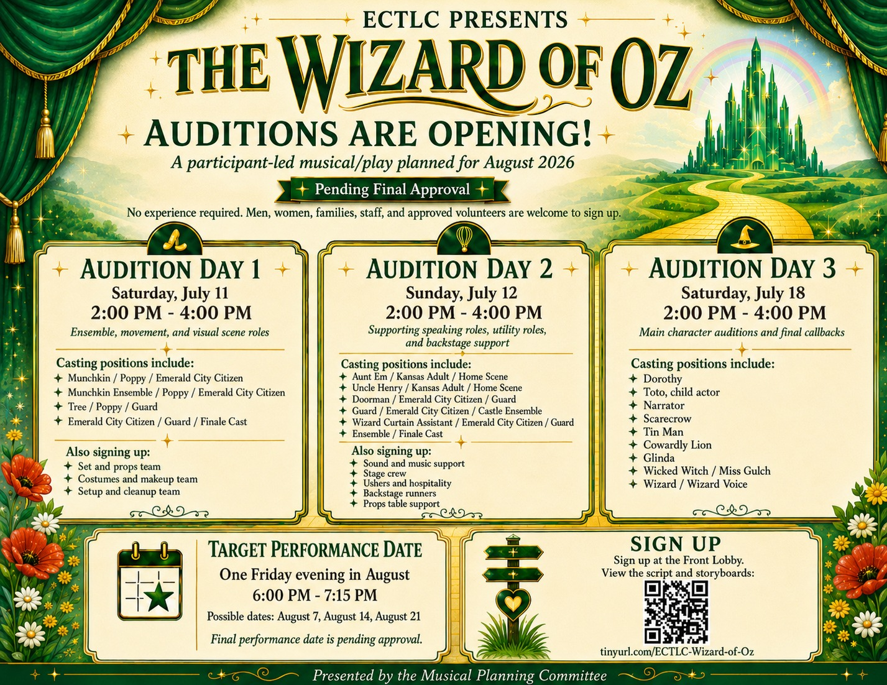
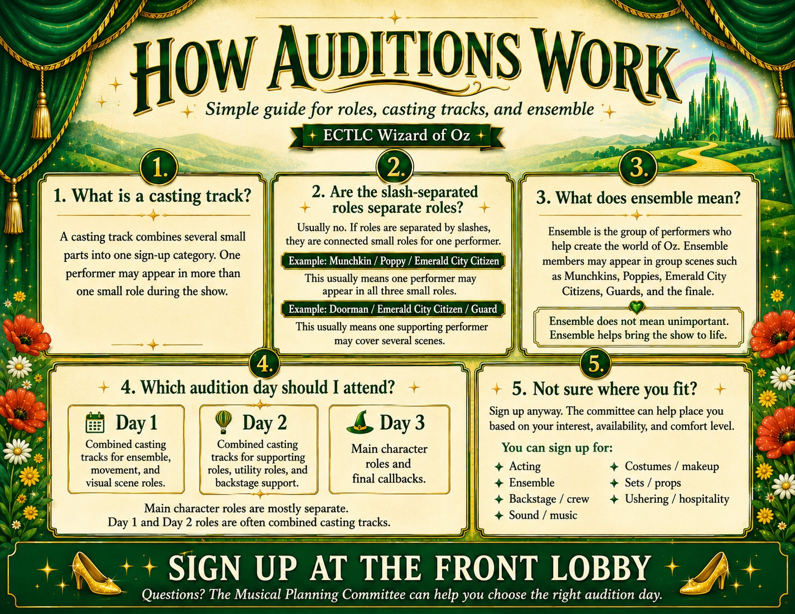

Auditions Are Opening
Audition dates, times, casting tracks, main character roles, QR code, and sign-up information.
Open FlyerA participant-led production created for our ECTLC community
This production hub was built so participants, staff, and outside volunteers can feel informed, invited, and part of something special from the very beginning.
Start with Auditions Open Interactive Script View StoryboardsWatch the audition explainer, review the flyers, open the Interactive Script, and view the storyboard pages. Everything here is intended to help people understand the opportunity, choose where they fit, and participate with confidence.

Audition dates, times, casting tracks, main character roles, QR code, and sign-up information.
Open Flyer
A simple explanation of casting tracks, slash-separated roles, ensemble, and which audition day to attend.
Open GuideDay 1: Ensemble, movement, and visual scene roles.
Day 2: Supporting speaking roles, utility roles, and backstage support.
Day 3: Main character auditions and final callbacks.
Open Short LinkRead scenes, filter by role, search text, jump between scenes, and print role-specific copies for rehearsal.
Open Interactive Script

Scenes 6 to 10: Poppies, Emerald City, Witch's Castle, Wizard reveal, and Home.
Open Page 2This is more than a performance. It is a chance for participants, staff, and volunteers to build something together, support one another, and bring the story to life.
Back to AuditionsNote: The production is pending final approval. Auditions and planning materials are being shared so the committee can organize interest, roles, and volunteer support responsibly.
{kind=link}
{kind=link}